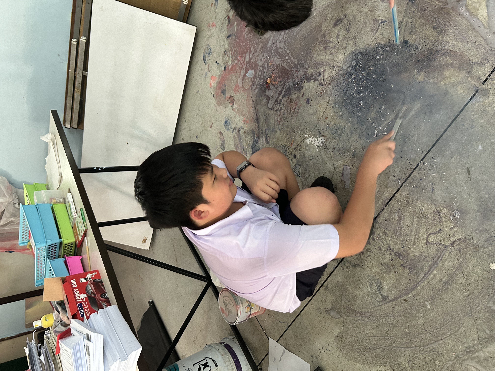

About Me
Hello! My name is Panachai Paweenwongwan, and I am from Chonburi, a beautiful province in Thailand. I'm currently a student attending Chonradsadornumrung School in the English Program. I previously studied at the International Education Program (IEP) for my elementary years.
I consider myself to be a friendly person once you get to know me, but I sometimes find it difficult to talk to new people. Despite that, I love connecting with those around me and always strive to bring a positive vibe into my interactions.
One of my main hobbies is reading, as it helps me relax and expand my knowledge. When I'm not reading, I enjoy playing games, with my favorite being 2048. I'm also passionate about cooking, as I find joy in creating and experimenting with different flavors and dishes.
Beyond my personal interests, I also like to challenge myself through various activities. I used to be part of my school’s swimming team and even participated in national competitions, which was a significant achievement in my life.
If you'd like to follow along with my journey or get in touch, feel free to connect with me on Instagram.